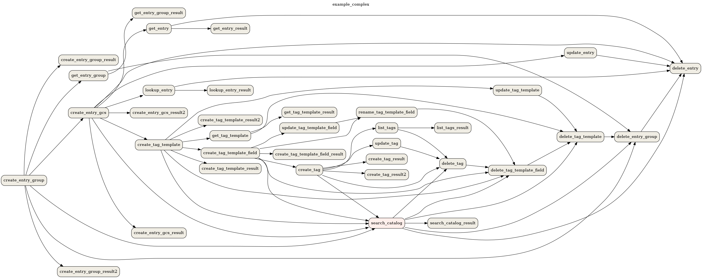
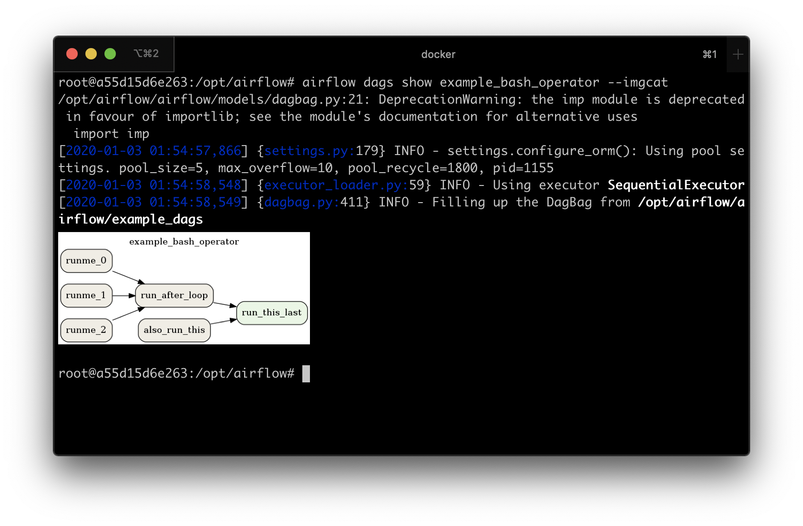

Using the Command Line Interface¶
This document is meant to give an overview of all common tasks while using the CLI.
Note
For more information on CLI commands, see Command Line Interface Reference
Set Up connection to a remote Airflow instance¶
For some functions the CLI can use the REST API. To configure the CLI to use the API when available configure as follows:
[cli]
api_client = airflow.api.client.json_client
endpoint_url = http://<WEBSERVER>:<PORT>
Set Up Bash/Zsh Completion¶
When using bash (or zsh) as your shell, airflow can use
argcomplete for auto-completion.
For global activation of all argcomplete enabled python applications run:
sudo activate-global-python-argcomplete
For permanent (but not global) airflow activation, use:
register-python-argcomplete airflow >> ~/.bashrc
For one-time activation of argcomplete for airflow only, use:
eval "$(register-python-argcomplete airflow)"
If you’re using zsh, add the following to your .zshrc:
autoload bashcompinit
bashcompinit
eval "$(register-python-argcomplete airflow)"
Creating a Connection¶
For information on creating connection using CLI, see Command Line Interface Reference
Exporting DAGs structure to images¶
The application has the functionality of saving DAG to image file. You can attach them to the documentation for the documentation, or send another without having to send the DAG file and install the application at the other person. However, you need to have Graphviz installed.
For example, if you want to export example_complex DAG then you can use the following command:
airflow dag show example_complex
After passing the dag_id parameter itself, the command will print rendered DAG structure (similar to Graph View)
to the screen in the DOT format.
It is possible to save the file in a different format. To do this, add the switch --save [filename].[format].
If you want to save files as PNG, you can use the following command:
airflow dags show example_complex --save example_complex.png
An example image file may look as follow:
The following file formats are supported:
bmp,
canon,dot,gv,xdot,xdot1.2,xdot1.4,
cgimage,
cmap,
eps,
exr,
fig,
gd,gd2,
gif,
gtk,
ico,
imap,cmapx,
imap_np,cmapx_np,
ismap,
jp2,
jpg,jpeg,jpe,
json,json0,dot_json,xdot_json,
pct,pict,
pic,
plain,plain-ext,
png,
pov,
ps,
ps2,
psd,
sgi,
svg,svgz,
tga,
tif,tiff,
tk,
vml,vmlz,
vrml,
wbmp,
webp,
xlib,
x11.
By default, the application search for DAGs in the directory specified in dags_folder option in
[core] section specified in the file airflow.cfg. You can change it with the --subdir switch.
Display DAGs structure¶
Sometimes you will work on DAGs that contain complex dependencies. It is helpful then to preview the DAG to see if it is correct.
If you have macOS, you can use iTerm2 together with the imgcat script to display the DAG structure in the console. You also need to have Graphviz installed.
Other terminals do not support the display of high-quality graphics. You can convert the image to a text form, but its resolution will prevent you from reading it.
To do this, you should use the --imgcat switch in the airflow dags show command. For example, if you
want to display example_bash_operator DAG then you can use the following command:
airflow dag show example_bash_operator --imgcat
You will see a similar result as in the screenshot below.
